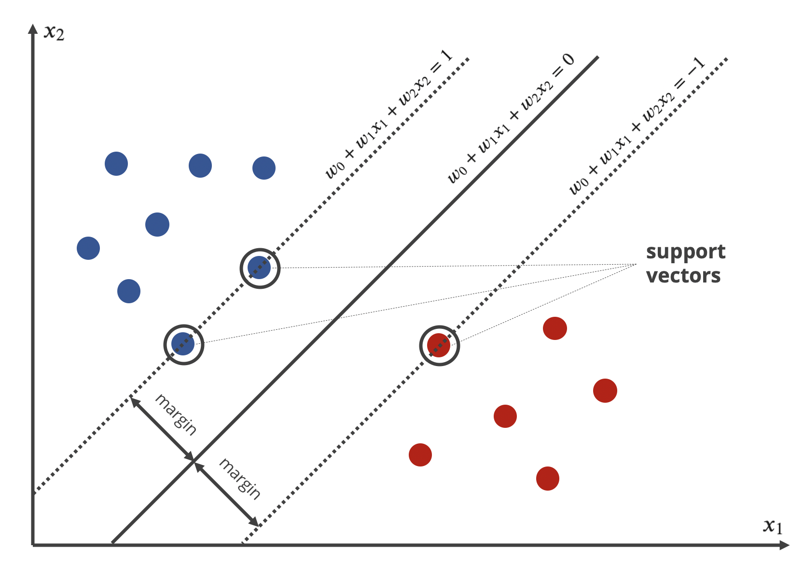
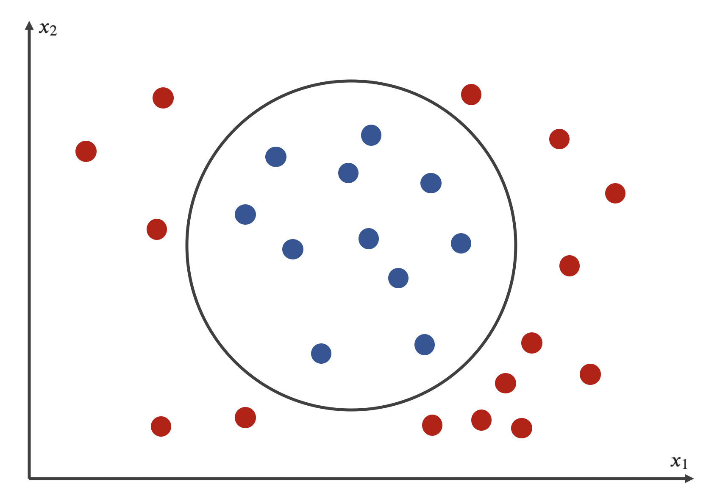

Sklearn: Classification
Contents
Sklearn: Classification#
import datetime as dt
import numpy as np
import pandas as pd
import matplotlib.pyplot as plt
from sklearn.neighbors import KNeighborsClassifier
from sklearn.tree import DecisionTreeClassifier, plot_tree
from sklearn.naive_bayes import GaussianNB, CategoricalNB, BernoulliNB, MultinomialNB
from sklearn.svm import SVC
from sklearn.model_selection import train_test_split, cross_val_score, GridSearchCV
from sklearn.metrics import roc_auc_score as AUC, fbeta_score as FScore
from sklearn.metrics.pairwise import paired_cosine_distances, cosine_distances
import dtreeviz
np.set_printoptions(precision=4, suppress=True)
plt.style.use(['seaborn', 'seaborn-whitegrid'])
%config InlineBackend.figure_format = 'retina'
1. K-Nearest Neighbors#
1.1. Algorithm#
K-NN (\(K\)-Nearest Neighbors) does not actually learn anything, it only saves all training data point. When predicting the label for a new query point \(\mathbf{s}_q\), the model first measures the distance \(d_n\) from each training point \(\mathbf{s}_n\) (\(n=1,2,\dots,N\)) to \(\mathbf{s}_q\). Then, select \(K\) points with smallest distance and do majority/weighted voting to determine which class the query point belongs to. For weighted voting, the query point will fall into the class with the highest total of weight. The corresponding weight of the observation \(\mathbf{s}_k\) is \(\displaystyle{w_k=1/d_k}\) (\(k=1,2,\dots,K\)). Majority voting can be thought as weighted voting where all sample weights are set to \(1/K\).
K-NN can also predict the probability that the query point falls into a specific class by computing the ratio between the total weights of those neighbors who support that class over the total weights of all \(K\) neighbors.
Distance metrics#
Some popular distance metrics being used in K-NN are:
Manhattan distance, measures the total distance of going along side every axis.
Euclidean distance, measures the direct distance.
Mahalanobis distance, same as Euclidean but variables are scaled and transformed to be uncorrelated.
Cosine distance, measures how large the angle between two vectors is.
However, Euclidean distance is the most common method:
1.2. Implementation#
Scikit-learn implements K-NN via the class KNeighborsClassifier.
model = KNeighborsClassifier()
cross_val_score(model, xTrain, yTrain, cv=5, scoring='roc_auc')
array([0.94788442, 0.93111455, 0.96362229, 0.97291022, 0.95923633])
Hyperparameters#
n_neighbors: the number of neighbors who vote for the label (\(K\)), defaults to 5.weights: the voting strategy, defaults to uniform (majority voting). Can be set to distance for weighted voting.metrics: the type of distance metric, defaults to euclidean. Other options are manhattan, mahalanobis, minkowski and chebyshev. Also accepts customized metrics with the signaturefuncDistance(x, y) -> distance, beside bulit-in ones.
dfCancer = pd.read_csv('../data/breast_cancer.csv')
x = dfCancer.drop(columns='target')
y = dfCancer.target
xTrain, xTest, yTrain, yTest = train_test_split(x, y, test_size=0.2, random_state=1)
start = dt.datetime.now()
def cosine_distance(x, y):
from numpy.linalg import norm
return 1 - x @ y / (norm(x, 2) * norm(y, 2))
space1 = {
'n_neighbors': np.arange(3, 11),
'weights': ['uniform', 'distance'],
'metric': [cosine_distance],
}
space2 = {
'n_neighbors': np.arange(3, 11),
'weights': ['uniform', 'distance'],
'metric': ['mahalanobis'],
'metric_params': [{'VI': np.cov(xTrain)}]
}
space3 = {
'n_neighbors': np.arange(3, 11),
'weights': ['uniform', 'distance'],
'metric': ['minkowski'],
'p': [1, 2, 3, 4, 5],
}
params = [space1, space2, space3]
algo = KNeighborsClassifier()
validator = GridSearchCV(algo, params, cv=5, scoring='roc_auc')
validator = validator.fit(xTrain, yTrain)
model = validator.best_estimator_
end = dt.datetime.now()
print(end - start)
0:00:45.142652
validator.best_params_
{'metric': 'minkowski', 'n_neighbors': 9, 'p': 1, 'weights': 'distance'}
yTestPred = model.predict_proba(xTest)[:, model.classes_==1]
aucTest = AUC(yTest, yTestPred)
modelName = model.__class__.__name__
print(f'AUC = {aucTest:.4f} [{modelName}]')
AUC = 0.9730 [KNeighborsClassifier]
Model structure#
Here are the information you can extract from a K-NN model fit by Scikit-learn:
kneighbors()method: find the \(K\) neighbors and their corresponding distances of query points.kneighbors_graph()method: compute the weighted graph of \(K\) neighbors for query points.
neighborDistance, neighborIndex = model.kneighbors(xTest)
neighborDistance.shape
(114, 9)
graph = model.kneighbors_graph(xTest, mode='distance').toarray()
graph.shape
(114, 455)
2. Decision Tree#
2.1. Algorithm#
Decision Tree is a method aiming to find a set of if-else statements to build a preditive model, visualized as a hierarchy diagram. There has been several Decision Tree algorithms invented throught out the history, notably include:
ID3, an algorithm that creates a multiway classification tree using information gain principle and works only on categorical variables.
C4.5, the successor of ID3, makes a number of improvements: (1) accepting continuous variables using thresholdList, (2) ignoring missing values in the calculation of information gain and (3) introducing tree pruning.
CART, a similar algorithm to C4.5 but it only grows binary trees and supports regression problems. This is the algorithm used in Scikit-learn.
Tree components#
In a Decision Tree, a node is the representation of data. The data is then split using a variable and a split condition. A node is a parent node if it is split, the smaller nodes after splitting it are child nodes. Here are the components of a tree:
Root node: the topmost node, represents the entire data
Leaf node (terminal node): the node that is not split further and predicts the label
Internal node: any node other than leaf nodes
Edge: the specific criterion to split a node
Branch: represents a sub-tree which considers an internal node as root node
{kind=link}
Measures of impurity#
The ultimate goal of Decision Tree is to construct a tree having leaf nodes as pure as possible. A node is considered pure if most of its observations fall into a single class. In contrast, an impure node distributes its observations equally into different classes. In this section, we learn about some quality metrics that measure the impurity of a node. These metrics should be designed so that the higher values they are, the less pure a node is.
Let’s say at a node, the probability (ratio) that an observation falls into a class \(\mathcal{C}_m\) is \(p_m\). Here are the two measures of impurity:
\(\displaystyle{\text{Entropy} = -\sum_{m=1}^{M}{p_m\log{p_m}}}\)
\(\displaystyle{\text{Gini} = 1-\sum_{m=1}^{M}{p_m^2}}\)
Now let’s graph these functions for the most simple case: binary classification. Despite that there are 2 classes, we only need to plot against the ratio of positive class.
import numpy as np
import matplotlib.pyplot as plt
plt.style.use(['seaborn', 'seaborn-whitegrid'])
%config InlineBackend.figure_format = 'retina'
error = 1e-3
boundLeft, boundRight = 0, 1
boundLeft, boundRight = boundLeft + error, boundRight - error
p = np.linspace(boundLeft, boundRight, 1000)
q = 1 - p
entropy = -(p * np.log(p) + q * np.log(q))
gini = 1 - (p**2 + q**2)
fig, ax = plt.subplots()
ax.plot(p, entropy, label='Entropy')
ax.plot(p, gini, label='Gini')
ax.legend()
plt.show()
{kind=link}
Algorithm details#
Input
A dataset of numerical features
A quality function
Stopping criteria (optional)
Step 1. For each unsplit node \(\mathcal{D}\) (starting from the root node):
Compute the impurity of node \(\mathcal{D}\).
For each candiate (which is a combination a feature and a threshold), split node \(D\) into 2 smaller nodes, \(\mathcal{D}_{\text{left}}\) and \(\mathcal{D}_{\text{right}}\).
Calculate the impurity for child nodes and information gain for the candidate:
Choose the candidate with the highest information gain. Split node \(D\) using that candidate.
Step 2. Go back and prune the tree until all stopping conditions are met. The purpose of this step is to prevent overfitting. For example, you can set the minimum number of observations to perform a split to 20, the algorithm will find all branches whose root node is not large enough. For each branch, it removes the entire branch and keeps only the root node.
Step 3. Calculate the ratio of every class in every leaf node. These values are used as probability prediction.
2.2. Implementation#
Scikit-learn implements Decision Tree via the class DecisionTreeClassifier.
Hyperparameters#
criterion: the measure of quality of a split, defaults to gini. The other option is entropy.max_depth: the maximum depth of the tree, defaults to None (no limitations).max_leaf_nodes: the maximum number of leaf nodes, defaults to None (no limitations).min_samples_split: the minimum number (if integer) or ratio (if float) of instances in a node to split, defautls to 2.min_samples_leaf: the minimum number (integer) or ratio (float) of instances a leaf node must have, deafaults to 1.min_weight_fraction_leaf: the minimum sum of instance weights a node must have, defaults to 0.min_impurity_decrease: a split will be performed if its information gain is not less than this value, defaults to 0.
dfCancer = pd.read_csv('../data/breast_cancer.csv')
x = dfCancer.drop(columns='target')
y = dfCancer.target
xTrain, xTest, yTrain, yTest = train_test_split(x, y, test_size=0.2, random_state=1)
start = dt.datetime.now()
params = {
'criterion': ['gini', 'entropy'],
'max_depth': range(2,6),
'random_state': [2],
}
algo = DecisionTreeClassifier()
validator = GridSearchCV(algo, params, cv=5, scoring='roc_auc')
validator = validator.fit(xTrain, yTrain)
model = validator.best_estimator_
print(dt.datetime.now() - start)
0:00:00.300512
validator.best_params_
{'criterion': 'gini', 'max_depth': 4, 'random_state': 2}
yTestPred = model.predict_proba(xTest)[:, model.classes_==1]
aucTest = AUC(yTest, yTestPred)
modelName = model.__class__.__name__
print(f'AUC = {aucTest:.4f} [{modelName}]')
AUC = 0.9373 [DecisionTreeClassifier]
Feature importances#
Decision Tree supports computing feature importances by taking the total information gain brought by each feature. This can be extracted using the feature_importances_ attribute.
nTop = 10
df = pd.DataFrame({'name': model.feature_names_in_, 'importance': model.feature_importances_})
df = df.sort_values('importance')
df = df.query("importance > 0")
df = df.tail(nTop)
fig, ax = plt.subplots(figsize=(5,2.5))
sns.barplot(data=df, x='importance', y='name', color='teal')
plt.show()
{kind=link}
Interpretation#
Scikit-learn has two functions, plot_tree() and decision_path() for visualization of the learned tree, but we are going to use a better library, dtreeviz to do this task.
explainer = dtreeviz.model(model, xTrain, yTrain, target_name=y.name, feature_names=x.columns)
explainer.view()
sample = x.iloc[0, :]
explainer.view(x=sample, fancy=False)
Multilabel problem#
Decision Tree, as well as some other tree-based algorithms, can be extended to multi-label problems, including both regression and classification. The term multi-label is also known as multi-output, but is different from multi-class.
dfEmotionTrain = pd.read_csv('../data/emotions_train.csv')
dfEmotionTest = pd.read_csv('../data/emotions_test.csv')
xTrain = dfEmotionTrain.iloc[:, :-6]
yTrain = dfEmotionTrain.iloc[:, -6:]
xTest = dfEmotionTest.iloc[:, :-6]
yTest = dfEmotionTest.iloc[:, -6:]
print(xTrain.shape, yTrain.shape)
(391, 72) (391, 6)
start = dt.datetime.now()
params = {
'criterion': ['gini', 'entropy'],
'max_depth': range(2,6),
'random_state': [2],
}
algo = DecisionTreeClassifier()
validator = GridSearchCV(algo, params, cv=5, scoring='roc_auc')
validator = validator.fit(xTrain, yTrain)
model = validator.best_estimator_
print(dt.datetime.now() - start)
0:00:00.941082
yTestProb = xTest | f(model.predict_proba) | f(np.array)
yTestProb = yTestProb[:, :, 1].T
listAuc = AUC(yTest, yTestProb, average=None)
listAuc = listAuc.round(4).tolist()
print(f'AUC = {listAuc} [{model.__class__.__name__}]')
AUC = [0.7801, 0.5942, 0.679, 0.8473, 0.707, 0.82] [DecisionTreeClassifier]
3. Naive Bayes#
3.1. Algorithm#
Naive Bayes is an algorithm based on the Bayes’ theorem. In the context of classification, given \(\mathbf{X}=\mathbf{x}_1,\mathbf{x}_2,\dots\) is the set of input variables and \(\mathbf{y}\) is the output variable; the Bayes theorem can be written as:
\(P(\mathbf{y}|\mathbf{X})\) is the posterior probability, the probability of a class for given predictors
\(P(\mathbf{X}|\mathbf{y})\) is the likelihood, the probability of predictors for a given class
\(P(\mathbf{y})\) is the prior probability of a class
\(P(\mathbf{X})\) is the prior probability of predictors
This formula expresses how the algorithm classifies a new query point to the class \(c\):
Likelihood estimation#
Naive Bayes assumes that \(\mathbf{x}_1,\mathbf{x}_2,\dots\) are independent of each other. This assumption looks quite unrealistic, explains why the algorithm is considered naive. However, Naive Bayes performs surprisingly well in real-world classification problems. The likelihood can be written under this assumption:
To estimate \(P(\mathbf{x}_i|\mathbf{y})\), there are three distributions can be used, depending on the input data:
Gaussian distribution, used when the input data is continuous. The parameters \(\mu_{\mathbf{y}}\) and \(\sigma_{\mathbf{y}}\) are estimated using maximum likelihood.
Multinomial distribution, used when the input data is categorical data. Widely used in text classification. In this formula, \(N\) represents the number of observations, \(\alpha\) represents the Laplace smooth coefficient, \(K\) is the number of words. \(\alpha=1\) is usually chosen, prevents the probability to be 0.
Bernoulli distribution, used for binary input data.
3.2. Implementation#
Tabular data#
This section uses the breast cancer dataset, where input variables are continuous. For a mixed types dataset, we independently train
GaussianNBfor continuous featuresCategoricalNBfor categorical featuresBernoulliNBfor binary features
then stack their results by multiplication.
dfCancer = pd.read_csv('../data/breast_cancer.csv')
x = dfCancer.drop(columns='target')
y = dfCancer.target
xTrain, xTest, yTrain, yTest = train_test_split(x, y, test_size=0.2, random_state=1)
start = dt.datetime.now()
params = {
'criterion': ['gini', 'entropy'],
'max_depth': range(2,6),
'random_state': [2],
}
algo = GaussianNB()
model = algo.fit(xTrain, yTrain)
print(dt.datetime.now() - start)
0:00:00.003376
yTestPred = model.predict_proba(xTest)[:, model.classes_==1]
aucTest = AUC(yTest, yTestPred)
modelName = model.__class__.__name__
print(f'AUC = {aucTest:.4f} [{modelName}]')
AUC = 0.9772 [GaussianNB]
Text data#
Text data is preprocessed so that columns represent words and row represents their number of occurrences (also known as count vectorization). MultinomialNB is suitable in this case.
xTrain = np.array([
[2, 2, 1, 0, 0, 0, 0, 0, 0],
[1, 3, 0, 1, 2, 0, 0, 0, 0],
[0, 1, 0, 1, 1, 0, 0, 0, 0],
[0, 1, 0, 0, 0, 0, 2, 1, 1]
])
yTrain = np.array(['A', 'A', 'A', 'B'])
xTest = np.array([
[1, 2, 0, 1, 0, 0, 0, 1, 0],
[0, 1, 0, 0, 0, 0, 0, 1, 1]
])
algo = MultinomialNB()
model = algo.fit(xTrain, yTrain)
model.predict(xTest)
array(['A', 'B'], dtype='<U1')
4. Support Vector Machines#
4.1. Algorithm#
Support Vector Machines is a binary classification algorithm, aiming to find a hyperplane that best splits the data into two classes (\(\mathbf{y}=1\) and \(\mathbf{y}=-1\)). SVM uses the following concepts:
Support vector: the closest point from the separating hyperplane. There is at least one support vector in each class.
Margin: the distance between a support vector and the separating hyperplane.
Notice that all support vectors should have the same distance from the decision boundary. In other words, the margins of both class are equal. It’s quite clear to state that the larger the margin is, the better the algorithm classifies the data.
The loss function#
Assume the equation of the separating hyperplane is \(w_0+w_1\mathbf{x}_1+w_2\mathbf{x}_2+\dots=0\). Denote \(\mathbf{w}=(w_1,w_2,\dots)\) and \(\mathbf{X}=(\mathbf{x}_1,\mathbf{x}_2,\dots)\), the boundary can be rewritten as \(w_0+\mathbf{w}\mathbf{X}=0\). Now do some transformations so that the equations of the two edges (hyperplanes that are parallel to the boundary and go through the support vectors) are \(w_0+\mathbf{w}\mathbf{X}=1\) and \(w_0+\mathbf{w}\mathbf{X}=-1\).
{kind=link}
By assigning suitable class values (for example, \(\mathbf{y}=1\) for blue class and \(\mathbf{y}=-1\) for red class), we have the following important property, which becomes the constraint for the margin formula:
\(|w_0+\mathbf{w}\mathbf{s}_n|=y_n\,(w_0+\mathbf{w}\mathbf{s}_n)=1\) for a support vector
\(|w_0+\mathbf{w}\mathbf{s}_n|=y_n\,(w_0+\mathbf{w}\mathbf{s}_n)>1\) for another data point
The margin can be calculated using the formula:
Notice that \(y_n\;(w_0+\mathbf{w}\mathbf{s}_n)=1\) and the objective of SVM is to maximize the margin, so the loss function is selected:
The coefficients of the separating equation are be estimated: \((\hat{w}_0,\hat{\mathbf{w}}) = \arg\min{\mathcal{L}(w_0,\mathbf{w})}\).
Soft Margin SVM#
In the simple example above, the line segregates perfectly; however a hard margin like that is very sensitive to outliers and can easily lead to overfitting. This can be avoided by allowing some misclassified points to get a larger margin, and thus return a better long run performance.
To get the soft margin, we soften the constrain of the margin formula:
\(\xi_n\) is the slack variable corresponding to the observation \(\mathbf{s}_n\), which is the distance from a data point in the wrong side to its corresponding edge, and is 0 otherwise. Mathematically:
\(\xi_n=0\) if a data point is in the safe zone
\(\xi_n=|w_0+\mathbf{w}\mathbf{s}_n-y_n|<1\) if a data point is correctly classified but lies within the margin
\(\xi_n=|w_0+\mathbf{w}\mathbf{s}_n-y_n|\geq1\) if a data point is in the wrong side of separating hyperplane
{kind=link}
The objective function of Soft Margin SVM adds a regularization amount to the loss function:
\(C\) is the regularization parameter, it maintains the trade-off between the misclassifications and how large the margin is. When \(C\) is very large, \(\mathcal{R}(w_0,\mathbf{w})\) approaches 0, the algorithm is now using hard margin. In contrast, a small value of \(C\) allows more data to be within the margin. A popular value of \(C\) is \(1/N\).
Kernel SVM#
Soft Margin SVM only works on linear separable data. When the data is non-linear, we project the data to a higher dimensional space. For example, mapping \((\mathbf{x}_1,\mathbf{x}_2)\) to \((\mathbf{x}_1,\mathbf{x}_2,\mathbf{x}_3)\) where \(\mathbf{x}_3=\mathbf{x}_1^2+\mathbf{x}_2^2\) seems a good strategy.
{kind=link}
However, transforming data directly may require a lot of computation, and becomes impossible when infinite dimensional is used. This problem can be avoided thanks to a technique called the kernel trick. It calculates the dot product of two transformed vectors, which represents their relationship in higher dimensional space. Depending on the problem, there are many kernel functions can be used:
Linear kernel: \(\kappa(\mathbf{a},\mathbf{b})=\mathbf{a}\mathbf{b}\)
Polynomial kernel: \(\kappa(\mathbf{a},\mathbf{b})=(\gamma\mathbf{a}\mathbf{b}+r)^d\)
Radial Basic Function kernel: \(\kappa(\mathbf{a},\mathbf{b})=\exp{\left(-\gamma\|\mathbf{a}-\mathbf{b}\|_2^2\right)}\)
Sigmoid kernel: \(\kappa(\mathbf{a},\mathbf{b})=\tanh{(\gamma\mathbf{a}\mathbf{b}+r)}\)
4.2. Implementation#
Scikit-learn implements Support Vector Classifier via the class SVC.
Hyperparameters#
C: the significance of the penalty, defaults to 1. Common values are \(10^k\) for \(k\in\{-2,-1,0,1,2\}\).kernel: the kernel function to be used, defaults to rbf. Other options are poly and sigmoid.gamma: the parameter \(\gamma\) in some kernel functions, defaults to scale. Common values are \(10^k\) for \(k\in\{-2,-1,0,1,2\}\).coef0: the paremeter \(r\) in some kernel functions, defaults to 0.degree: the parameter \(d\) in polynomial kernel, defaults to 3.
dfCancer = pd.read_csv('../data/breast_cancer.csv')
x = dfCancer.drop(columns='target')
y = dfCancer.target
xTrain, xTest, yTrain, yTest = train_test_split(x, y, test_size=0.2, random_state=1)
start = dt.datetime.now()
params = {
'C': [0.1, 1, 10],
'kernel': ['rbf', 'sigmoid'],
'gamma': [0.01, 0.1, 1],
'probability': [True],
}
algo = SVC()
validator = GridSearchCV(algo, params, cv=5, scoring='roc_auc')
validator = validator.fit(xTrain, yTrain)
model = validator.best_estimator_
print(dt.datetime.now() - start)
0:00:03.631612
validator.best_params_
{'C': 1, 'gamma': 0.01, 'kernel': 'rbf', 'probability': True}
print(model.support_vectors_.shape)
print(xTrain.shape)
(452, 30)
(455, 30)
Probabilistic prediction#
SVM does not easily calculate probabilities like K-NN or Decision Tree, it instead implements cross validated logistic regression on the scores. Thus, it is computationally expensive and need to be enabled. Otherwise, decision function of SVM can be used instead.
yTestPred = model.predict_proba(xTest)[:, model.classes_==1]
aucTest = AUC(yTest, yTestPred)
modelName = model.__class__.__name__
print(f'AUC = {aucTest:.4f} [{modelName}]')
AUC = 0.9696 [SVC]
yTestPred = model.decision_function(xTest)
aucTest = AUC(yTest, yTestPred)
modelName = model.__class__.__name__
print(f'AUC = {aucTest:.4f} [{modelName}]')
AUC = 0.9696 [SVC]
Install#
!brew reinstall graphviz
Warning: You are using macOS 10.15.
We (and Apple) do not provide support for this old version.
It is expected behaviour that some formulae will fail to build in this old version.
It is expected behaviour that Homebrew will be buggy and slow.
Do not create any issues about this on Homebrew's GitHub repositories.
Do not create any issues even if you think this message is unrelated.
Any opened issues will be immediately closed without response.
Do not ask for help from MacHomebrew on Twitter.
You may ask for help in Homebrew's discussions but are unlikely to receive a response.
Try to figure out the problem yourself and submit a fix as a pull request.
We will review it but may or may not accept it.
==> Fetching dependencies for graphviz: automake, bison, libpng, freetype, fontconfig, cmake, nasm, jpeg-turbo, gettext, flex, doxygen, ca-certificates, openssl@1.1, readline, sqlite, xz, python@3.11, docutils, pygments, sphinx-doc, highway, imath, lz4, zstd, libtiff, little-cms2, webp, jpeg-xl, yasm, aom, libavif, gd, ninja, meson, pcre2, glib, scons, swig, apr, apr-util, utf8proc, subversion, jasper, netpbm, util-macros, xtrans, xcb-proto, xorgproto, libxau, libxdmcp, libxcb, libx11, libxext, libxrender, pixman, gobject-introspection, gdk-pixbuf, icu4c, harfbuzz, pango and librsvg
==> Fetching automake
==> Downloading https://ghcr.io/v2/homebrew/core/automake/manifests/1.16.5
######################################################################## 100.0%
==> Downloading https://ghcr.io/v2/homebrew/core/automake/blobs/sha256:ae77a247a
==> Downloading from https://pkg-containers.githubusercontent.com/ghcr1/blobs/sh
######################################################################## 100.0%
==> Fetching bison
==> Downloading https://ghcr.io/v2/homebrew/core/bison/manifests/3.8.2
######################################################################## 100.0%
==> Downloading https://ghcr.io/v2/homebrew/core/bison/blobs/sha256:5a79db63b8a1
==> Downloading from https://pkg-containers.githubusercontent.com/ghcr1/blobs/sh
######################################################################## 100.0%
==> Fetching libpng
==> Downloading https://ghcr.io/v2/homebrew/core/libpng/manifests/1.6.39
######################################################################## 100.0%
==> Downloading https://ghcr.io/v2/homebrew/core/libpng/blobs/sha256:13780286d98
==> Downloading from https://pkg-containers.githubusercontent.com/ghcr1/blobs/sh
######################################################################## 100.0%
==> Fetching freetype
==> Downloading https://downloads.sourceforge.net/project/freetype/freetype2/2.1
==> Downloading from https://udomain.dl.sourceforge.net/project/freetype/freetyp
######################################################################## 100.0%
==> Fetching fontconfig
==> Downloading https://www.freedesktop.org/software/fontconfig/release/fontconf
######################################################################## 100.0%
==> Fetching cmake
==> Downloading https://github.com/Kitware/CMake/releases/download/v3.25.2/cmake
==> Downloading from https://objects.githubusercontent.com/github-production-rel
######################################################################## 100.0%
==> Fetching nasm
==> Downloading https://www.nasm.us/pub/nasm/releasebuilds/2.16.01/nasm-2.16.01.
######################################################################## 100.0%
==> Fetching jpeg-turbo
==> Downloading https://downloads.sourceforge.net/project/libjpeg-turbo/2.1.5.1/
==> Downloading from https://udomain.dl.sourceforge.net/project/libjpeg-turbo/2.
######################################################################## 100.0%
==> Fetching gettext
==> Downloading https://ghcr.io/v2/homebrew/core/gettext/manifests/0.21.1
######################################################################## 100.0%
==> Downloading https://ghcr.io/v2/homebrew/core/gettext/blobs/sha256:aba2b94f40
==> Downloading from https://pkg-containers.githubusercontent.com/ghcr1/blobs/sh
######################################################################## 100.0%
==> Fetching flex
==> Downloading https://ghcr.io/v2/homebrew/core/flex/manifests/2.6.4_2
######################################################################## 100.0%
==> Downloading https://ghcr.io/v2/homebrew/core/flex/blobs/sha256:e563a7a42acef
==> Downloading from https://pkg-containers.githubusercontent.com/ghcr1/blobs/sh
######################################################################## 100.0%
==> Fetching doxygen
==> Downloading https://doxygen.nl/files/doxygen-1.9.6.src.tar.gz
######################################################################## 100.0%
==> Fetching ca-certificates
==> Downloading https://ghcr.io/v2/homebrew/core/ca-certificates/manifests/2023-
######################################################################## 100.0%
==> Downloading https://ghcr.io/v2/homebrew/core/ca-certificates/blobs/sha256:11
==> Downloading from https://pkg-containers.githubusercontent.com/ghcr1/blobs/sh
######################################################################## 100.0%
==> Fetching openssl@1.1
==> Downloading https://www.openssl.org/source/openssl-1.1.1t.tar.gz
######################################################################## 100.0%
==> Fetching readline
==> Downloading https://ghcr.io/v2/homebrew/core/readline/manifests/8.2.1
######################################################################## 100.0%
==> Downloading https://ghcr.io/v2/homebrew/core/readline/blobs/sha256:ef32c6905
==> Downloading from https://pkg-containers.githubusercontent.com/ghcr1/blobs/sh
######################################################################## 100.0%
==> Fetching sqlite
==> Downloading https://sqlite.org/2022/sqlite-autoconf-3400100.tar.gz
######################################################################## 100.0%
==> Fetching xz
==> Downloading https://downloads.sourceforge.net/project/lzmautils/xz-5.4.1.tar
==> Downloading from https://udomain.dl.sourceforge.net/project/lzmautils/xz-5.4
######################################################################## 100.0%
==> Fetching python@3.11
==> Downloading https://raw.githubusercontent.com/Homebrew/formula-patches/6d2fb
######################################################################## 100.0%
==> Downloading https://raw.githubusercontent.com/Homebrew/formula-patches/a1618
######################################################################## 100.0%
==> Downloading https://files.pythonhosted.org/packages/b6/21/cb9a8d0b2c8597c83f
######################################################################## 100.0%
==> Downloading https://files.pythonhosted.org/packages/a3/50/c4d2727b99052780aa
######################################################################## 100.0%
==> Downloading https://files.pythonhosted.org/packages/a2/b8/6a06ff0f13a00fc3c3
######################################################################## 100.0%
==> Downloading https://www.python.org/ftp/python/3.11.2/Python-3.11.2.tgz
######################################################################## 100.0%
==> Fetching docutils
==> Downloading https://downloads.sourceforge.net/project/docutils/docutils/0.19
==> Downloading from https://udomain.dl.sourceforge.net/project/docutils/docutil
######################################################################## 100.0%
==> Fetching pygments
==> Downloading https://ghcr.io/v2/homebrew/core/pygments/manifests/2.14.0
######################################################################## 100.0%
==> Downloading https://ghcr.io/v2/homebrew/core/pygments/blobs/sha256:d4b221452
==> Downloading from https://pkg-containers.githubusercontent.com/ghcr1/blobs/sh
######################################################################## 100.0%
==> Fetching sphinx-doc
==> Downloading https://files.pythonhosted.org/packages/cc/b4/ed8dcb0d67d5cfb7f8
######################################################################## 100.0%
==> Downloading https://files.pythonhosted.org/packages/ff/80/45b42203ecc32c8de2
######################################################################## 100.0%
==> Downloading https://files.pythonhosted.org/packages/37/f7/2b1b0ec44fdc30a3d3
######################################################################## 100.0%
==> Downloading https://files.pythonhosted.org/packages/a1/34/44964211e5410b051e
######################################################################## 100.0%
==> Downloading https://files.pythonhosted.org/packages/8b/e1/43beb3d38dba6cb420
######################################################################## 100.0%
==> Downloading https://files.pythonhosted.org/packages/a7/84/62473fb57d61e31fef
######################################################################## 100.0%
==> Downloading https://files.pythonhosted.org/packages/7a/ff/75c28576a1d900e87e
######################################################################## 100.0%
==> Downloading https://files.pythonhosted.org/packages/1d/97/2288fe498044284f39
######################################################################## 100.0%
==> Downloading https://files.pythonhosted.org/packages/27/59/e9ee6fc936961fd701
######################################################################## 100.0%
==> Downloading https://files.pythonhosted.org/packages/47/d5/aca8ff6f49aa5565df
######################################################################## 100.0%
==> Downloading https://files.pythonhosted.org/packages/6d/37/54f2d7c147e42dc85f
######################################################################## 100.0%
==> Downloading https://files.pythonhosted.org/packages/a5/61/a867851fd5ab772774
######################################################################## 100.0%
==> Downloading https://files.pythonhosted.org/packages/44/7b/af302bebf22c749c56
######################################################################## 100.0%
==> Downloading https://files.pythonhosted.org/packages/00/45/1973a8e0fae5a9b4fa
######################################################################## 100.0%
==> Downloading https://files.pythonhosted.org/packages/98/33/dc28393f16385f722c
######################################################################## 100.0%
==> Downloading https://files.pythonhosted.org/packages/eb/85/93464ac9bd43d248e7
######################################################################## 100.0%
==> Downloading https://files.pythonhosted.org/packages/b2/e8/9ed3830aeed71f17c0
######################################################################## 100.0%
==> Downloading https://files.pythonhosted.org/packages/b1/8e/c4846e59f38a5f2b4a
######################################################################## 100.0%
==> Downloading https://files.pythonhosted.org/packages/b5/72/835d6fadb9e5d02304
######################################################################## 100.0%
==> Downloading https://files.pythonhosted.org/packages/c2/51/32da03cf19d17d46cc
######################################################################## 100.0%
==> Downloading https://files.pythonhosted.org/packages/db/0b/a0f60c4abd8a69bd5b
######################################################################## 100.0%
==> Fetching highway
==> Downloading https://github.com/google/highway/archive/refs/tags/1.0.3.tar.gz
==> Downloading from https://codeload.github.com/google/highway/tar.gz/refs/tags
-=O=- # # # #
==> Fetching imath
==> Downloading https://ghcr.io/v2/homebrew/core/imath/manifests/3.1.6
######################################################################## 100.0%
==> Downloading https://ghcr.io/v2/homebrew/core/imath/blobs/sha256:26b26215e534
==> Downloading from https://pkg-containers.githubusercontent.com/ghcr1/blobs/sh
######################################################################## 100.0%
==> Fetching lz4
==> Downloading https://ghcr.io/v2/homebrew/core/lz4/manifests/1.9.4
######################################################################## 100.0%
==> Downloading https://ghcr.io/v2/homebrew/core/lz4/blobs/sha256:ddb59c42498843
==> Downloading from https://pkg-containers.githubusercontent.com/ghcr1/blobs/sh
######################################################################## 100.0%
==> Fetching zstd
==> Downloading https://github.com/facebook/zstd/archive/v1.5.4.tar.gz
==> Downloading from https://codeload.github.com/facebook/zstd/tar.gz/refs/tags/
######################################################################## 100.0%
==> Fetching libtiff
==> Downloading https://ghcr.io/v2/homebrew/core/libtiff/manifests/4.4.0_1-1
######################################################################## 100.0%
==> Downloading https://ghcr.io/v2/homebrew/core/libtiff/blobs/sha256:c9a4d1faa6
==> Downloading from https://pkg-containers.githubusercontent.com/ghcr1/blobs/sh
######################################################################## 100.0%
==> Fetching little-cms2
==> Downloading https://ghcr.io/v2/homebrew/core/little-cms2/manifests/2.14
######################################################################## 100.0%
==> Downloading https://ghcr.io/v2/homebrew/core/little-cms2/blobs/sha256:2c3da4
==> Downloading from https://pkg-containers.githubusercontent.com/ghcr1/blobs/sh
######################################################################## 100.0%
==> Fetching webp
==> Downloading https://storage.googleapis.com/downloads.webmproject.org/release
######################################################################## 100.0%
==> Fetching jpeg-xl
==> Cloning https://github.com/webmproject/sjpeg.git
Cloning into '/Users/hungpq/Library/Caches/Homebrew/jpeg-xl--sjpeg--git'...
==> Checking out revision 868ab558fad70fcbe8863ba4e85179eeb81cc840
HEAD is now at 868ab55 Merge pull request #92 from webmproject/cmath
==> Cloning https://skia.googlesource.com/skcms.git
Cloning into '/Users/hungpq/Library/Caches/Homebrew/jpeg-xl--skcms--git'...
==> Checking out revision b25b07b4b07990811de121c0356155b2ba0f4318
HEAD is now at b25b07b Fix issues with newer clang
==> Downloading https://github.com/libjxl/libjxl/archive/v0.8.1.tar.gz
==> Downloading from https://codeload.github.com/libjxl/libjxl/tar.gz/refs/tags/
######################################################################## 100.0%
==> Fetching yasm
==> Downloading https://ghcr.io/v2/homebrew/core/yasm/manifests/1.3.0_2-1
######################################################################## 100.0%
==> Downloading https://ghcr.io/v2/homebrew/core/yasm/blobs/sha256:9aa61930f25fe
==> Downloading from https://pkg-containers.githubusercontent.com/ghcr1/blobs/sh
######################################################################## 100.0%
==> Fetching aom
==> Downloading https://media.xiph.org/video/derf/y4m/bus_qcif_15fps.y4m
######################################################################## 100.0%
==> Cloning https://aomedia.googlesource.com/aom.git
Cloning into '/Users/hungpq/Library/Caches/Homebrew/aom--git'...
==> Checking out tag v3.6.0
HEAD is now at 3c65175b1 Add VOD peak compression efficiency improvement
==> Fetching libavif
==> Downloading https://ghcr.io/v2/homebrew/core/libavif/manifests/0.11.1
######################################################################## 100.0%
==> Downloading https://ghcr.io/v2/homebrew/core/libavif/blobs/sha256:b7d1c39830
==> Downloading from https://pkg-containers.githubusercontent.com/ghcr1/blobs/sh
######################################################################## 100.0%
==> Fetching gd
==> Downloading https://ghcr.io/v2/homebrew/core/gd/manifests/2.3.3_4
######################################################################## 100.0%
==> Downloading https://ghcr.io/v2/homebrew/core/gd/blobs/sha256:541e1b5312cbbcf
==> Downloading from https://pkg-containers.githubusercontent.com/ghcr1/blobs/sh
######################################################################## 100.0%
==> Fetching ninja
==> Downloading https://ghcr.io/v2/homebrew/core/ninja/manifests/1.11.1
######################################################################## 100.0%
==> Downloading https://ghcr.io/v2/homebrew/core/ninja/blobs/sha256:3e89d7587da0
==> Downloading from https://pkg-containers.githubusercontent.com/ghcr1/blobs/sh
######################################################################## 100.0%
==> Fetching meson
==> Downloading https://ghcr.io/v2/homebrew/core/meson/manifests/1.0.0
######################################################################## 100.0%
==> Downloading https://ghcr.io/v2/homebrew/core/meson/blobs/sha256:17d37236c589
==> Downloading from https://pkg-containers.githubusercontent.com/ghcr1/blobs/sh
######################################################################## 100.0%
==> Fetching pcre2
==> Downloading https://github.com/PCRE2Project/pcre2/releases/download/pcre2-10
==> Downloading from https://objects.githubusercontent.com/github-production-rel
######################################################################## 100.0%
==> Fetching glib
==> Downloading https://raw.githubusercontent.com/Homebrew/formula-patches/43467
######################################################################## 100.0%
==> Downloading https://download.gnome.org/sources/glib/2.74/glib-2.74.5.tar.xz
==> Downloading from https://mirror.ossplanet.net/gnome/sources/glib/2.74/glib-2
######################################################################## 100.0%
==> Fetching scons
==> Downloading https://ghcr.io/v2/homebrew/core/scons/manifests/4.4.0-1
######################################################################## 100.0%
==> Downloading https://ghcr.io/v2/homebrew/core/scons/blobs/sha256:f6d6e507ea5b
==> Downloading from https://pkg-containers.githubusercontent.com/ghcr1/blobs/sh
######################################################################## 100.0%
==> Fetching swig
==> Downloading https://downloads.sourceforge.net/project/swig/swig/swig-4.1.1/s
==> Downloading from https://udomain.dl.sourceforge.net/project/swig/swig/swig-4
######################################################################## 100.0%
==> Fetching apr
==> Downloading https://www.apache.org/dyn/closer.lua?path=apr/apr-1.7.2.tar.bz2
==> Downloading from https://dlcdn.apache.org/apr/apr-1.7.2.tar.bz2
######################################################################## 100.0%
==> Fetching apr-util
==> Downloading https://www.apache.org/dyn/closer.lua?path=apr/apr-util-1.6.3.ta
==> Downloading from https://dlcdn.apache.org/apr/apr-util-1.6.3.tar.bz2
######################################################################## 100.0%
==> Fetching utf8proc
==> Downloading https://ghcr.io/v2/homebrew/core/utf8proc/manifests/2.8.0
######################################################################## 100.0%
==> Downloading https://ghcr.io/v2/homebrew/core/utf8proc/blobs/sha256:a4985025c
==> Downloading from https://pkg-containers.githubusercontent.com/ghcr1/blobs/sh
######################################################################## 100.0%
==> Fetching subversion
==> Downloading https://raw.githubusercontent.com/Homebrew/formula-patches/03cf8
######################################################################## 100.0%
==> Downloading https://github.com/encukou/py3c/archive/v1.1.tar.gz
==> Downloading from https://codeload.github.com/encukou/py3c/tar.gz/refs/tags/v
#=#=-# #
==> Downloading https://www.apache.org/dyn/closer.lua?path=serf/serf-1.3.9.tar.b
==> Downloading from https://dlcdn.apache.org/serf/serf-1.3.9.tar.bz2
######################################################################## 100.0%
==> Downloading https://www.apache.org/dyn/closer.lua?path=subversion/subversion
==> Downloading from https://dlcdn.apache.org/subversion/subversion-1.14.2.tar.b
######################################################################## 100.0%
==> Fetching jasper
==> Downloading https://github.com/jasper-software/jasper/releases/download/vers
==> Downloading from https://objects.githubusercontent.com/github-production-rel
######################################################################## 100.0%
==> Fetching netpbm
==> Cloning https://svn.code.sf.net/p/netpbm/code/stable
==> Checking out 4482
You must: brew install svn
Error: Failed to download resource "netpbm"
Failure while executing; `/usr/bin/env svn checkout https://svn.code.sf.net/p/netpbm/code/stable /Users/hungpq/Library/Caches/Homebrew/netpbm--svn --quiet -r 4482` exited with 1. Here's the output:
You must: brew install svn
!brew install svn
Running `brew update --auto-update`...
Warning: You are using macOS 10.15.
We (and Apple) do not provide support for this old version.
It is expected behaviour that some formulae will fail to build in this old version.
It is expected behaviour that Homebrew will be buggy and slow.
Do not create any issues about this on Homebrew's GitHub repositories.
Do not create any issues even if you think this message is unrelated.
Any opened issues will be immediately closed without response.
Do not ask for help from Homebrew or its maintainers on social media.
You may ask for help in Homebrew's discussions but are unlikely to receive a response.
Try to figure out the problem yourself and submit a fix as a pull request.
We will review it but may or may not accept it.
==> Fetching dependencies for subversion: ca-certificates, openssl@1.1, readline, sqlite, xz, python@3.11, scons, pcre2, swig, apr, apr-util, gettext, lz4 and utf8proc
==> Fetching ca-certificates
==> Downloading https://ghcr.io/v2/homebrew/core/ca-certificates/manifests/2023-
Already downloaded: /Users/hungpq/Library/Caches/Homebrew/downloads/927414ed081d996b84d938be6af4d2639403b4d2bee3cc29268d0844999da180--ca-certificates-2023-01-10.bottle_manifest.json
==> Downloading https://ghcr.io/v2/homebrew/core/ca-certificates/blobs/sha256:11
Already downloaded: /Users/hungpq/Library/Caches/Homebrew/downloads/ca2448928ab98c455b5e46d4a6604247a151ab0f4e60553dbb5c6aecd2e1df3c--ca-certificates--2023-01-10.all.bottle.tar.gz
==> Fetching openssl@1.1
==> Downloading https://www.openssl.org/source/openssl-1.1.1t.tar.gz
Already downloaded: /Users/hungpq/Library/Caches/Homebrew/downloads/ec3feb171aa63b32c30a6e7423e78f743f92d1ef984b66b0ea548d08220c0ce6--openssl-1.1.1t.tar.gz
==> Fetching readline
==> Downloading https://ghcr.io/v2/homebrew/core/readline/manifests/8.2.1
Already downloaded: /Users/hungpq/Library/Caches/Homebrew/downloads/ab483c9a913ae82f3a2b3ae20918791bc3bd6825c7122a29cd4f1e0c65413759--readline-8.2.1.bottle_manifest.json
==> Downloading https://ghcr.io/v2/homebrew/core/readline/blobs/sha256:ef32c6905
Already downloaded: /Users/hungpq/Library/Caches/Homebrew/downloads/fb26001090758f1cb91959f0036348b0b885dbf6566db6e1b9972ee8b9cb6f93--readline--8.2.1.catalina.bottle.tar.gz
==> Fetching sqlite
==> Downloading https://sqlite.org/2022/sqlite-autoconf-3400100.tar.gz
Already downloaded: /Users/hungpq/Library/Caches/Homebrew/downloads/c96f3bb3aeae4899e0658b7eca100199582b323a79a1158f4111183e737d0ae4--sqlite-autoconf-3400100.tar.gz
==> Fetching xz
==> Downloading https://downloads.sourceforge.net/project/lzmautils/xz-5.4.1.tar
Already downloaded: /Users/hungpq/Library/Caches/Homebrew/downloads/ca0c062e8ecb14160415874ad277c80d73d9a9d00aa926ff11a32e877f6651fe--xz-5.4.1.tar.gz
==> Fetching python@3.11
==> Downloading https://raw.githubusercontent.com/Homebrew/formula-patches/6d2fb
Already downloaded: /Users/hungpq/Library/Caches/Homebrew/downloads/2322057182c6bb73dfe09e098010168a5a9d0712a89cee86d2c5ddb11052137e--3.11-sysconfig.diff
==> Downloading https://raw.githubusercontent.com/Homebrew/formula-patches/a1618
Already downloaded: /Users/hungpq/Library/Caches/Homebrew/downloads/5fea40db1cb33001d6ab42c76fc28693ce292532c6ed6f89dd3154dac29167bb--3.10-distutils-scheme.diff
==> Downloading https://files.pythonhosted.org/packages/b6/21/cb9a8d0b2c8597c83f
Already downloaded: /Users/hungpq/Library/Caches/Homebrew/downloads/baa4898f4ba1986a3029b65e2816bd8027282a9c55dfe944dd85a0081a76bf99--setuptools-65.6.3.tar.gz
==> Downloading https://files.pythonhosted.org/packages/a3/50/c4d2727b99052780aa
Already downloaded: /Users/hungpq/Library/Caches/Homebrew/downloads/18f112eb5ce9a9a304959fcd69b75d3102a4f4bc9821d5aecacadd114a74c6b9--pip-22.3.1.tar.gz
==> Downloading https://files.pythonhosted.org/packages/a2/b8/6a06ff0f13a00fc3c3
Already downloaded: /Users/hungpq/Library/Caches/Homebrew/downloads/11cf98bef3f824f9e6accda9cc720e738be1574ce4b58aa560a67633ac092eab--wheel-0.38.4.tar.gz
==> Downloading https://www.python.org/ftp/python/3.11.2/Python-3.11.2.tgz
Already downloaded: /Users/hungpq/Library/Caches/Homebrew/downloads/ce4d3485f1170910f1fc15bee454d07bce7f72122bf69605c03a10856a187fb8--Python-3.11.2.tgz
==> Fetching scons
==> Downloading https://ghcr.io/v2/homebrew/core/scons/manifests/4.4.0-1
Already downloaded: /Users/hungpq/Library/Caches/Homebrew/downloads/e0f7175c6caaeaddd82d7561daa37b2515245cf7300c3903323790e160f3c0a9--scons-4.4.0-1.bottle_manifest.json
==> Downloading https://ghcr.io/v2/homebrew/core/scons/blobs/sha256:f6d6e507ea5b
Already downloaded: /Users/hungpq/Library/Caches/Homebrew/downloads/77d4042fc437e8c3fa6895a7fb1fb5058f4ff71d1885df5d2ef848775212110e--scons--4.4.0.catalina.bottle.1.tar.gz
==> Fetching pcre2
==> Downloading https://github.com/PCRE2Project/pcre2/releases/download/pcre2-10
Already downloaded: /Users/hungpq/Library/Caches/Homebrew/downloads/7f4d74ac3e447b9fed53bce4202af3921ffc5ae1469894e7e1b10bda2145a15b--pcre2-10.42.tar.bz2
==> Fetching swig
==> Downloading https://downloads.sourceforge.net/project/swig/swig/swig-4.1.1/s
Already downloaded: /Users/hungpq/Library/Caches/Homebrew/downloads/a9cc60bae4a14ba803f00aa5bc5139f77d8aecd59ddfcdbc0c93b327064385da--swig-4.1.1.tar.gz
==> Fetching apr
==> Downloading https://www.apache.org/dyn/closer.lua?path=apr/apr-1.7.2.tar.bz2
Already downloaded: /Users/hungpq/Library/Caches/Homebrew/downloads/b0ae23e3155a1b07c48f3499251ec83ef25d89d646f2aca6af8dc11eda5e1f31--apr-1.7.2.tar.bz2
==> Fetching apr-util
==> Downloading https://www.apache.org/dyn/closer.lua?path=apr/apr-util-1.6.3.ta
Already downloaded: /Users/hungpq/Library/Caches/Homebrew/downloads/f92b0b8f8aca10c95944d44ff834eaeff0ba3765853997ecca7f44208dbf111f--apr-util-1.6.3.tar.bz2
==> Fetching gettext
==> Downloading https://ghcr.io/v2/homebrew/core/gettext/manifests/0.21.1
Already downloaded: /Users/hungpq/Library/Caches/Homebrew/downloads/1c2f2c62faee672530e8e8e2695f99d26d1b606e74b289d1914dfa13c732c500--gettext-0.21.1.bottle_manifest.json
==> Downloading https://ghcr.io/v2/homebrew/core/gettext/blobs/sha256:aba2b94f40
Already downloaded: /Users/hungpq/Library/Caches/Homebrew/downloads/d2245974ec5d3f748df780e31a3547191c29479b4c1efc0cd0c08675085b7c82--gettext--0.21.1.catalina.bottle.tar.gz
==> Fetching lz4
==> Downloading https://ghcr.io/v2/homebrew/core/lz4/manifests/1.9.4
Already downloaded: /Users/hungpq/Library/Caches/Homebrew/downloads/379e59b981667f9585b33a2ff318769d8edca3ce6fd2e9a67ed291ae3e0cc872--lz4-1.9.4.bottle_manifest.json
==> Downloading https://ghcr.io/v2/homebrew/core/lz4/blobs/sha256:ddb59c42498843
Already downloaded: /Users/hungpq/Library/Caches/Homebrew/downloads/1be1135f7cfd23bcb54dcfbdba636ff1527ed7ef62742d8c83746626395404f3--lz4--1.9.4.catalina.bottle.tar.gz
==> Fetching utf8proc
==> Downloading https://ghcr.io/v2/homebrew/core/utf8proc/manifests/2.8.0
Already downloaded: /Users/hungpq/Library/Caches/Homebrew/downloads/bbb5063945c794b7e1054a560bb8bf4bd7ba9c52e1c2a86474bff529691b1488--utf8proc-2.8.0.bottle_manifest.json
==> Downloading https://ghcr.io/v2/homebrew/core/utf8proc/blobs/sha256:a4985025c
Already downloaded: /Users/hungpq/Library/Caches/Homebrew/downloads/14eb20920aacc45bcd827c59899725d1728792936af36e323f4b7352a87af1f8--utf8proc--2.8.0.catalina.bottle.tar.gz
==> Fetching subversion
==> Downloading https://raw.githubusercontent.com/Homebrew/formula-patches/03cf8
Already downloaded: /Users/hungpq/Library/Caches/Homebrew/downloads/195208ba31cadc265ea97bb8aad4e78caab1200daf4d855e6c839b5f987f92db--configure-big_sur.diff
==> Downloading https://github.com/encukou/py3c/archive/v1.1.tar.gz
Already downloaded: /Users/hungpq/Library/Caches/Homebrew/downloads/341faafd274c164961d080ffbaab85a010d9385563dc574212244e60297de7b8--py3c-1.1.tar.gz
==> Downloading https://www.apache.org/dyn/closer.lua?path=serf/serf-1.3.9.tar.b
Already downloaded: /Users/hungpq/Library/Caches/Homebrew/downloads/cfe7b56061b1bb57199b8b7a8782c47f1e318dbf2f6e108ce67c20f926be1df9--serf-1.3.9.tar.bz2
==> Downloading https://www.apache.org/dyn/closer.lua?path=subversion/subversion
Already downloaded: /Users/hungpq/Library/Caches/Homebrew/downloads/5d396317799e6411e8a1d3d38353fc5e11d89f67e9324657893292074e4e6471--subversion-1.14.2.tar.bz2
==> Installing dependencies for subversion: ca-certificates, openssl@1.1, readline, sqlite, xz, python@3.11, scons, pcre2, swig, apr, apr-util, gettext, lz4 and utf8proc
==> Installing subversion dependency: ca-certificates
==> Pouring ca-certificates--2023-01-10.all.bottle.tar.gz
==> Regenerating CA certificate bundle from keychain, this may take a while...
🍺 /usr/local/Cellar/ca-certificates/2023-01-10: 3 files, 216.9KB
==> Installing subversion dependency: openssl@1.1
==> perl ./Configure --prefix=/usr/local/Cellar/openssl@1.1/1.1.1t --openssldir=
==> make
==> make install MANDIR=/usr/local/Cellar/openssl@1.1/1.1.1t/share/man MANSUFFIX
==> make test
🍺 /usr/local/Cellar/openssl@1.1/1.1.1t: 8,094 files, 18.5MB, built in 4 minutes 51 seconds
==> Installing subversion dependency: readline
==> Pouring readline--8.2.1.catalina.bottle.tar.gz
🍺 /usr/local/Cellar/readline/8.2.1: 50 files, 1.7MB
==> Installing subversion dependency: sqlite
==> ./configure --prefix=/usr/local/Cellar/sqlite/3.40.1 --enable-dynamic-extens
==> make install
🍺 /usr/local/Cellar/sqlite/3.40.1: 11 files, 4.4MB, built in 1 minute 5 seconds
==> Installing subversion dependency: xz
==> ./configure --prefix=/usr/local/Cellar/xz/5.4.1
==> make check
==> make install
🍺 /usr/local/Cellar/xz/5.4.1: 222 files, 2.7MB, built in 53 seconds
==> Installing subversion dependency: python@3.11
==> Patching
==> Applying 3.11-sysconfig.diff
patching file Lib/sysconfig.py
==> Applying 3.10-distutils-scheme.diff
patching file Lib/distutils/command/install.py
==> ./configure --prefix=/usr/local/Cellar/python@3.11/3.11.2_1 --enable-ipv6 --
==> make
==> make install PYTHONAPPSDIR=/usr/local/Cellar/python@3.11/3.11.2_1
==> make frameworkinstallextras PYTHONAPPSDIR=/usr/local/Cellar/python@3.11/3.11
==> /usr/local/Cellar/python@3.11/3.11.2_1/bin/python3.11 -m venv /private/tmp/p
==> /private/tmp/pythonA3.11-20230309-84098-zrnhg5/Python-3.11.2/whl_build/bin/p
==> /private/tmp/pythonA3.11-20230309-84098-zrnhg5/Python-3.11.2/whl_build/bin/p
==> /private/tmp/pythonA3.11-20230309-84098-zrnhg5/Python-3.11.2/whl_build/bin/p
==> /private/tmp/pythonA3.11-20230309-84098-zrnhg5/Python-3.11.2/whl_build/bin/p
Warning: These files were overwritten during the `brew link` step:
/usr/local/bin/2to3
/usr/local/bin/idle3
/usr/local/bin/pydoc3
/usr/local/bin/python3
/usr/local/bin/python3-config
/usr/local/share/man/man1/python3.1
/usr/local/lib/pkgconfig/python3-embed.pc
/usr/local/lib/pkgconfig/python3.pc
/usr/local/Frameworks/Python.framework/Headers
/usr/local/Frameworks/Python.framework/Python
/usr/local/Frameworks/Python.framework/Resources
/usr/local/Frameworks/Python.framework/Versions/Current
They have been backed up to: /Users/hungpq/Library/Caches/Homebrew/Backup
==> /usr/local/Cellar/python@3.11/3.11.2_1/bin/python3.11 -m ensurepip
==> /usr/local/Cellar/python@3.11/3.11.2_1/bin/python3.11 -m pip install -v --no
==> Summary
🍺 /usr/local/Cellar/python@3.11/3.11.2_1: 8,122 files, 193.7MB, built in 11 minutes 42 seconds
==> Installing subversion dependency: scons
==> Pouring scons--4.4.0.catalina.bottle.1.tar.gz
🍺 /usr/local/Cellar/scons/4.4.0: 2,303 files, 29.7MB
==> Installing subversion dependency: pcre2
==> ./configure --prefix=/usr/local/Cellar/pcre2/10.42 --enable-pcre2-16 --enabl
==> make
==> make install
🍺 /usr/local/Cellar/pcre2/10.42: 230 files, 6.4MB, built in 46 seconds
==> Installing subversion dependency: swig
==> ./configure --prefix=/usr/local/Cellar/swig/4.1.1
==> make
==> make install
🍺 /usr/local/Cellar/swig/4.1.1: 775 files, 5.7MB, built in 44 seconds
==> Installing subversion dependency: apr
==> ./configure --prefix=/usr/local/Cellar/apr/1.7.2 --libdir=/usr/local/Cellar/
==> make install
🍺 /usr/local/Cellar/apr/1.7.2: 59 files, 1.4MB, built in 1 minute 25 seconds
==> Installing subversion dependency: apr-util
==> ./configure --prefix=/usr/local/Cellar/apr-util/1.6.3 --libdir=/usr/local/Ce
==> make
==> make install
🍺 /usr/local/Cellar/apr-util/1.6.3: 54 files, 871KB, built in 17 seconds
==> Installing subversion dependency: gettext
==> Pouring gettext--0.21.1.catalina.bottle.tar.gz
🍺 /usr/local/Cellar/gettext/0.21.1: 1,983 files, 20.5MB
==> Installing subversion dependency: lz4
==> Pouring lz4--1.9.4.catalina.bottle.tar.gz
🍺 /usr/local/Cellar/lz4/1.9.4: 22 files, 680.4KB
==> Installing subversion dependency: utf8proc
==> Pouring utf8proc--2.8.0.catalina.bottle.tar.gz
🍺 /usr/local/Cellar/utf8proc/2.8.0: 10 files, 763KB
==> Installing subversion
==> Patching
==> Applying configure-big_sur.diff
patching file configure
Hunk #1 succeeded at 10798 (offset 2065 lines).
==> /usr/local/opt/scons/bin/scons PREFIX=/usr/local/Cellar/subversion/1.14.2_1/
==> /usr/local/opt/scons/bin/scons install
==> ./configure --prefix=/usr/local/Cellar/subversion/1.14.2_1 --enable-optimize
==> make
==> make install
==> make tools
==> make install-tools
==> make swig-py
==> make install-swig-py
==> make swig-pl-lib
==> make install-swig-pl-lib
==> /usr/bin/perl Makefile.PL PREFIX=/usr/local/Cellar/subversion/1.14.2_1 INSTA
==> make install
==> Caveats
svntools have been installed to:
/usr/local/opt/subversion/libexec
The perl bindings are located in various subdirectories of:
/usr/local/opt/subversion/lib/perl5
==> Summary
🍺 /usr/local/Cellar/subversion/1.14.2_1: 254 files, 31.6MB, built in 3 minutes 32 seconds
==> Running `brew cleanup subversion`...
Disable this behaviour by setting HOMEBREW_NO_INSTALL_CLEANUP.
Hide these hints with HOMEBREW_NO_ENV_HINTS (see `man brew`).
Warning: The following dependents of upgraded formulae are outdated but will not
be upgraded because they are not bottled:
pyenv
wget
pango
gdk-pixbuf
harfbuzz
glib
gobject-introspection
librsvg
graphviz
libgit2
python@3.9
git
libidn2
==> Caveats
==> subversion
svntools have been installed to:
/usr/local/opt/subversion/libexec
The perl bindings are located in various subdirectories of:
/usr/local/opt/subversion/lib/perl5